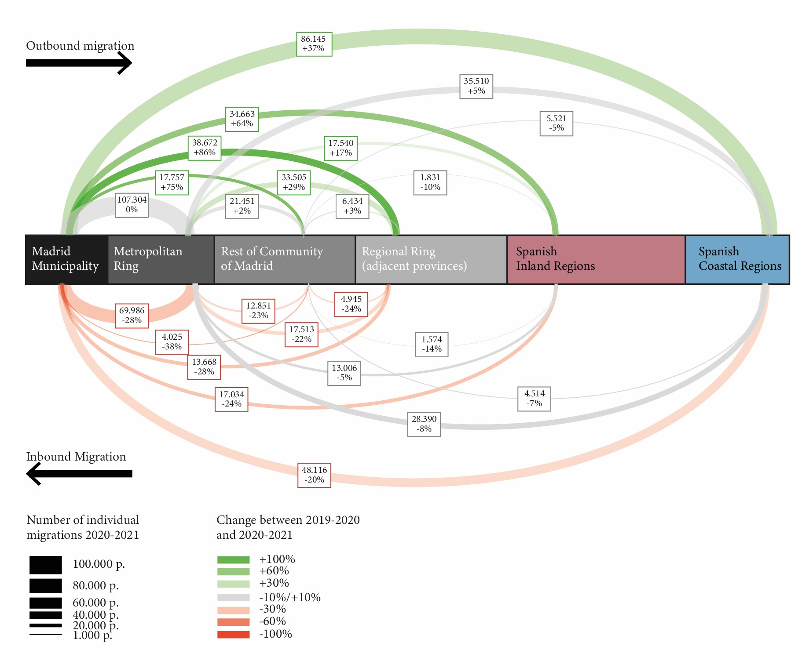
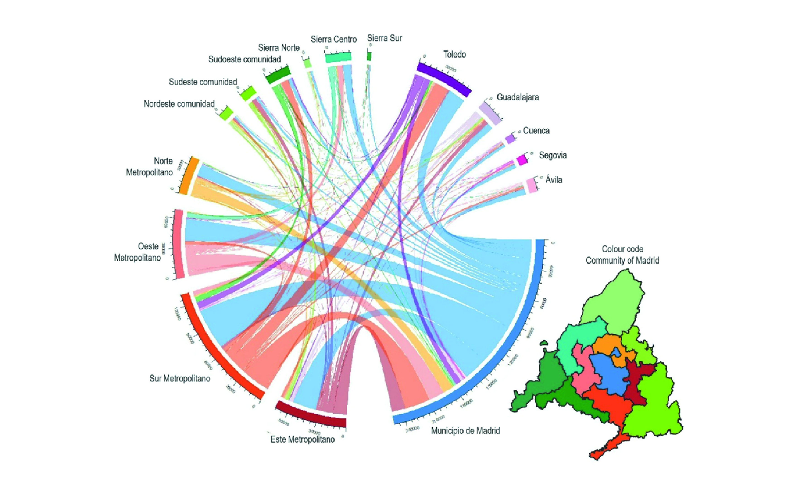

Cada vez más lejos
Hay una dimensión metropolitana en el problema de la vivienda. Entre antes y después de la COVID, y bien entrada la época pospandemia, se intensifican y amplían todos los movimientos de salida de Madrid, y se reducen los de entrada. Todos los saldos migratorios por pares apuntan hacia la periferia. ¿Ya no todo el mundo quiere vivir en Madrid? ¿Hasta dónde es por no querer, y hasta dónde por no poder?
Cambiar de casa es elegir un estilo de vida que viene en el paquete del lugar de residencia nuevo. Empieza con un contrato que no se renueva, o con una subida que ya no se puede pagar. A veces, con un proyecto deliberado de relocalización familiar, de acceso a la propiedad donde cada uno se lo puede permitir, o de búsqueda de aire fresco. Sigue con unas semanas de portales inmobiliarios, ampliando cada noche un poco el radio de búsqueda: primero el barrio, luego el municipio de al lado, luego el siguiente pueblo por la misma autovía. Y termina un sábado con una furgoneta cargada, rumbo a un sitio que hace diez años nadie habría llamado Madrid.
Cada año, alrededor de un millón de personas cambian de casa en el área metropolitana de Madrid. Son decisiones privadas: una habitación más, un alquiler que se puede pagar, un jardín para los niños. Vistas todas a la vez, se parecen más a una fuerza física. El centro —con sus problemas bien conocidos— empuja hacia la primera corona, la primera corona hacia la segunda, y la segunda hacia Toledo y Guadalajara, e incluso más allá. En plena crisis de vivienda, el mapa de Madrid se está redibujando a golpe de mudanza, y siempre en la misma dirección. Y todo ello con un aumento considerable de la población, que agranda y densifica el espacio metropolitano.
Lo que no se muda es el trabajo. El lunes siguiente hay que llegar a la misma oficina, al mismo polígono, al mismo hospital. Solo que ahora, desde más lejos. Relocalización residencial y movilidad son dos caras de la misma moneda.
The metropolitan side of housing
Large cities have always pushed part of their population outwards. What changes over time is the scale and the distance. In most large metropolitan areas the mechanism is the same: housing costs rise fastest where jobs and services are most concentrated, and households trade distance for space and price. Remote work has added a new option for some workers by loosening the daily link between home and office. The result is a metropolitan area that keeps growing at its edges, while its centre attracts fewer new residents than it used to.
Madrid is not an exception. Similar processes have been described in other global cities such as New York or Paris, often under the label of the donut effect: centres that lose their pull while the rings around them keep growing.
The diagram below summarises residential moves between Madrid municipality, its metropolitan ring, the rest of the region, the adjacent provinces and the rest of Spain. Moves away from the centre are drawn above the axis and moves towards it below. Arc width shows the size of each flow, and colour shows its change from one year to the next (green for growth, red for decline).

Hacia fuera, y cada vez más lejos
Antes de nuestro estudio hay dos trabajos especialmente pertinentes. Gil-Alonso et al. (2021) siguen con datos del Padrón la evolución de la población en los centros y las periferias de 69 áreas urbanas españolas, comparando los años de crisis (2011-2015) con la recuperación posterior (2015-2019), y analizan en detalle cinco grandes metrópolis, entre ellas Madrid. Su conclusión es que el reparto de la población dentro de las áreas urbanas se ha vuelto más diverso y heterogéneo, con unas periferias que ganan peso frente a la ciudad central. González-Leonardo et al. (2022) muestran, también con registros oficiales, que en 2020 todas las grandes ciudades españolas perdieron población por migración interna, y que Madrid fue, junto con Barcelona y Valencia, donde ese saldo negativo fue más acusado. Las ganancias se iban a zonas rurales de montaña y a algunos municipios de costa. Advierten, eso sí, de que buena parte de ese cambio podía ser temporal.
Nuestro estudio sobre relocalizaciones residenciales en la región de Madrid parte de ahí y baja a una escala más fina: la de las coronas metropolitanas y los corredores. Y lo hace con una metodología capaz de recoger lo que los registros oficiales no abarcan, al trabajar con datos anonimizados de telefonía móvil.

Señalamos varias cosas para el caso de Madrid. La primera: la salida de Madrid se intensifica y llega cada vez más lejos, mientras la entrada se reduce. La pandemia no inventó este movimiento; aceleró algo que ya estaba en marcha.
La segunda, que las entradas desde el resto de España, ya sea gente de la periferia o de otras provincias que se muda a Madrid ciudad, se reducen y no terminan de recuperarse. Probablemente las están sustituyendo llegadas desde el extranjero.
La tercera, que las periferias son cada vez más amplias, en población y en distancia. En parte por el teletrabajo, que pesa sobre todo entre las clases profesionales. Pero, principalmente, por la disponibilidad de vivienda y de espacio, que importa especialmente a las rentas medias y a los hogares con hijos. Para mucha gente que sigue trabajando en Madrid, vivir en Toledo, en Guadalajara o en la franja rural del área metropolitana ya es una opción corriente.
La cuarta es la lógica de corredor. Las relocalizaciones no se reparten al azar: siguen los corredores radiales, sus autovías y sus líneas de Cercanías. El destino más probable de una mudanza está en el mismo corredor, pero más lejos. Quien se va de Getafe tiende a acabar en Toledo; quien se va de Alcalá de Henares, en Guadalajara. La gente de Madrid se va a la corona metropolitana, y la de la corona, a la periferia extendida. Siempre en cascada, y siempre de forma centrífuga.
Detrás de estas líneas hay también una historia familiar. En los años setenta y ochenta, las coronas sur y este se llenaron de gente llegada de los pueblos de Toledo y Guadalajara. Muchos de sus hijos y nietos están deshaciendo hoy el camino por la misma carretera.
Y aquí van algunas reflexiones desde la movilidad.
Nada de esto es nuevo, ni exclusivo de Madrid. La diferencia es que en otras regiones hay políticas que acompañan y anticipan estos procesos, para que el urbanismo y las infraestructuras no vayan siempre por detrás.
Cada una de estas mudanzas tiene una consecuencia en la carretera. Al relocalizarse hacia lugares peor conectados, el tráfico regional crece. Poco a poco, se cambian lugares bien servidos por el transporte público por lugares donde, sin coche, es muy difícil vivir.
El sistema de transporte, tanto el de titularidad estatal como el regional, no se concibió para esta escala. Y menos aún para el Madrid de ocho millones de habitantes que se proyecta para 2040. En esta franja metropolitana de cuatro millones de personas, la inversión en vivienda, transporte e infraestructuras no ha seguido el ritmo del crecimiento. Otras ciudades en una situación parecida ya han apostado por reforzar su gran corona metropolitana.
No se trata solo de transporte pesado. Son territorios menos densos, que piden soluciones adaptadas: tranvías, autobuses exprés, transporte a la demanda, trenes regionales, infraestructura ciclista. Hoy, la oferta en La Sagra o en la Campiña de Guadalajara es claramente insuficiente, y cada vez son más los municipios de más de 30.000 habitantes sin una conexión de transporte de alta capacidad.
Esto choca también con las políticas ambientales. Muchas se diseñan desde el centro y pasan por alto a una población a la que apenas se le ofrecen alternativas al coche: se le pide que contamine menos sin darle con qué.
El geógrafo Christophe Guilluy lo describió en La France périphérique (2014). Su tesis es que Francia se ha partido en dos. Por un lado, un puñado de metrópolis globalizadas que concentran el empleo, la riqueza y la inversión. Por otro, una Francia espacios periurbanos, donde vive la mayoría de la población y adonde el precio de la vivienda ha ido empujando a las clases populares. Una Francia que depende del coche para casi todo, y que se siente olvidada por quienes deciden. Cuatro años después del libro, en otoño de 2018, una subida del impuesto sobre los carburantes sacó a esa Francia a las rotondas con chalecos amarillos.
En otras periferias españolas, como las de Valencia, Sevilla o Málaga, la situación es todavía más frágil.
Methodology
Full article: https://onlinelibrary.wiley.com/doi/10.1002/psp.70017
The study uses anonymised mobile phone data to identify where people live in February of each year (2019, 2020, 2021 and 2022) and compares each person’s place of residence from one year to the next. A change of more than 1 km counts as a residential move. The sample is then scaled up to the whole population using the municipal register (Padrón). Unlike official registers, which only record the moves people declare, this approach also captures students, temporary workers and others who rarely update their registration. The results were checked against INE’s official migration statistics, with very close agreement.
Sources
Marigil Alba, C., Romanillos Arroyo, G., García-Palomares, J. C., & Sánchez-Cauce, R. (2025). Metropolitan migratory trends in the post-pandemic context. Analysis of the Madrid Region based on mobile phone network data. Population, Space and Place, 31(3), e70017. https://onlinelibrary.wiley.com/doi/10.1002/psp.70017
Gil-Alonso, F., López-Villanueva, C., Bayona-i-Carrasco, J., & Pujadas, I. (2021). Towards an even more spatially diversified city? New metropolitan population trends in the post-economic crisis period. Urban Science, 5(2), 41. https://doi.org/10.3390/urbansci5020041
González-Leonardo, M., López-Gay, A., Newsham, N., Recaño, J., & Rowe, F. (2022). Understanding patterns of internal migration during the COVID-19 pandemic in Spain. Population, Space and Place, 28(6), e2578. https://doi.org/10.1002/psp.2578
Ramani, A., & Bloom, N. (2021). The donut effect of COVID-19 on cities. NBER Working Paper 28876.
Guilluy, C. (2014). La France périphérique. Comment on a sacrifié les classes populaires. Flammarion.
Author: Carlos Marigil Alba